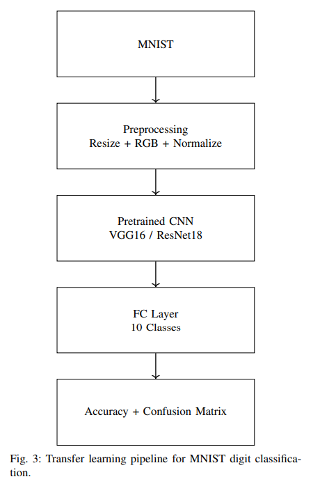
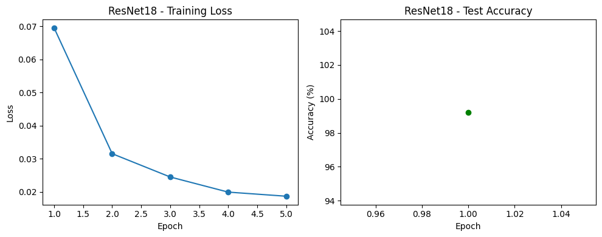
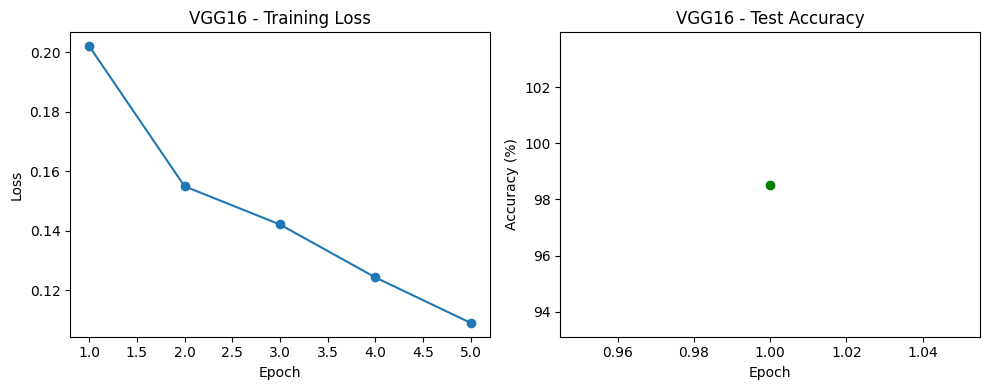
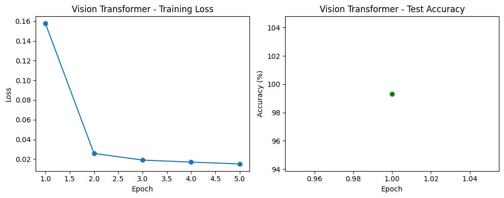
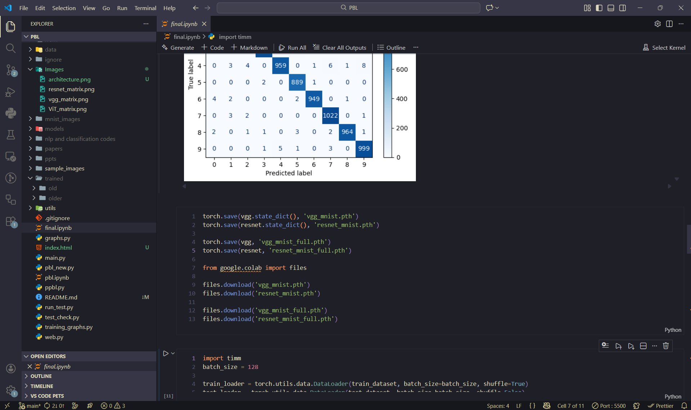
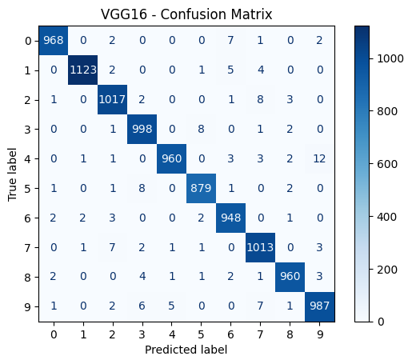
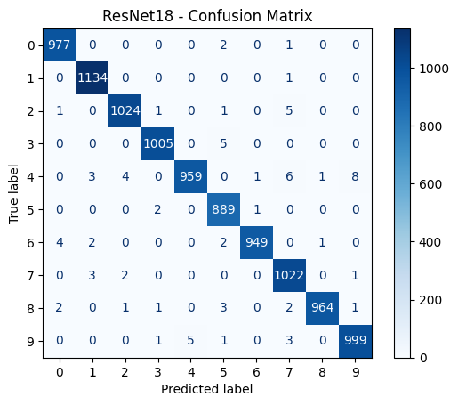
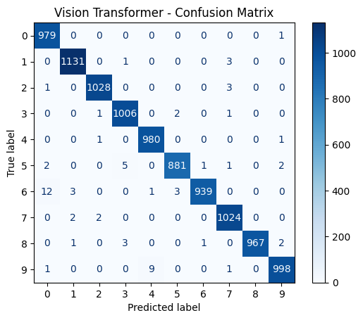
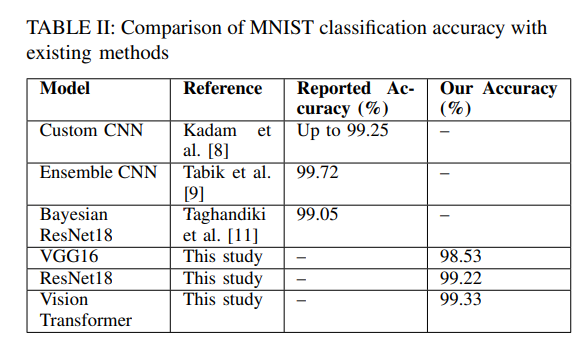

Optical Handwritten Digit Recognition Using Deep Learning Models
Modern deep learning architectures such as VGG16, ResNet18, and Vision Transformers can effectively classify handwritten digits from MNIST. Residual connections and attention mechanisms are hypothesized to outperform traditional CNN pipelines.
Abstract
This project evaluates VGG16, ResNet18, and Vision Transformer models on the MNIST handwritten digit dataset using identical preprocessing and training pipelines. Results demonstrate superior performance from Vision Transformers, highlighting the benefit of global attention in visual classification tasks.
Problem Statement
Handwritten digit recognition suffers from variability in writing styles, stroke thickness, and digit morphology. Traditional methods fail to generalize well. This project benchmarks three pretrained architectures to determine stability and accuracy under controlled conditions.
Research Gap
Direct comparison of VGG16, ResNet18, and Vision Transformers under identical transfer-learning pipelines is limited. This work closes that gap.
MNIST Dataset
The Modified National Institute of Standards and Technology (MNIST) dataset is a widely used benchmark in computer vision and machine learning, particularly for evaluating handwritten digit recognition systems. It consists of 70,000 grayscale images of handwritten digits ranging from 0 to 9, collected from various writers to ensure diversity in writing styles, stroke thickness, curvature, and digit structure.
The dataset is divided into 60,000 training samples and 10,000 testing samples. Each original image has a resolution of 28×28 pixels and contains a single digit centered within the frame. Despite its apparent simplicity, MNIST presents several challenges such as overlapping digit shapes (for example, 4 vs 9 or 5 vs 6), inconsistent handwriting patterns, and variations in scale and alignment.
For compatibility with pretrained deep learning architectures originally designed for ImageNet, all MNIST images were resized to 224×224 pixels and converted from single-channel grayscale to three-channel grayscale. Pixel values were normalized to the range [-1, 1] to match ImageNet preprocessing standards. This transformation enables effective transfer learning by allowing pretrained convolutional and transformer-based models to extract meaningful visual features from digit images.
Each image represents one of ten digit classes (0–9), providing a balanced multiclass classification problem. MNIST serves as an ideal experimental platform due to its standardized splits, extensive prior research, and reproducibility across studies. In this project, the dataset is used to comparatively evaluate traditional convolutional networks, residual architectures, and transformer-based vision models under identical training conditions.
Dataset Summary: 70,000 images • 10 classes • 28×28 grayscale • resized to 224×224 • RGB conversion • normalized input
Sample Digits from MNIST
The MNIST dataset contains significant variation in handwriting styles. Below are representative samples illustrating intra-class diversity in stroke thickness, curvature, and digit structure.
Digit: 7
Digit: 4
Additional digit samples may be added to further illustrate intra-class diversity.
Model Architecture Comparison
This project evaluates three fundamentally different deep learning paradigms: a traditional convolutional network (VGG16), a residual convolutional network (ResNet18), and an attention-based Vision Transformer. The table below summarizes their architectural characteristics and practical trade-offs.
| Aspect | VGG16 | ResNet18 | Vision Transformer |
|---|---|---|---|
| Feature learning | Local spatial features | Local + residual features | Global context features |
| Typical parameters | ~138M | ~11M | ~86M (ViT-Base) |
| Training stability | Moderate | High | Moderate on small datasets |
| Training time | High | Medium | High |
| Compute cost | High | Medium | High |
| Data efficiency | Strong on small datasets | Strong on small datasets | Weak without large pretraining |
| Primary limitation | Gradient degradation | Limited global context | Heavy data & compute demand |
ResNet18 provides the best stability–efficiency tradeoff, while Vision Transformers benefit from global attention at the cost of higher computational requirements.
Methodology
Dataset
MNIST (70,000 images). Resized to 224×224, converted to RGB, normalized to [-1,1].
Models
VGG16, ResNet18, Vision Transformer with replaced 10-class heads.

Training Analysis & Experimental Evidence
This section presents training loss curves, test accuracy plots, confusion matrices, and implementation snapshots for VGG16, ResNet18, and Vision Transformer models trained on MNIST.
ResNet18

VGG16

Vision Transformer

Experimental Environment

Model training, evaluation, and visualization conducted using PyTorch in Jupyter/VS Code environment.
Results
Final Accuracies: VGG16 – 98.53%, ResNet18 – 99.22%, Vision Transformer – 99.33%.



Comparison with Existing Methods

Table II: Comparison of MNIST classification accuracy with existing methods and results obtained in this study.
Research Paper & Publication
Based on the experimental findings and comparative analysis presented in this project, a formal research paper has been authored in collaboration with Dr. Tarun Jain. The paper documents the methodology, architectural comparisons, training behavior, and performance evaluation of VGG16, ResNet18, and Vision Transformer models on the MNIST dataset.
The manuscript is currently under the publication process, with Dr. Tarun Jain overseeing submission and review. This work aims to contribute empirical insights into transfer learning and attention-based vision models for handwritten digit recognition.
This project therefore extends beyond academic coursework and represents an ongoing research effort toward peer-reviewed publication.
Conclusion & Future Work
Vision Transformers achieved the highest accuracy, demonstrating the value of attention-based architectures. Future work includes larger datasets, hyperparameter optimization, and deployment on edge devices.
References
- V. Agrawal, J. Jagtap, and M. P. Kantipudi, “Exploration of advancements in handwritten document recognition techniques,” Intelligent Systems with Applications, vol. 22, p. 200358, 2024.
- L. Deng, “The MNIST database of handwritten digit images for machine learning research,” IEEE Signal Processing Magazine, vol. 29, no. 6, pp. 141–142, 2012.
- Y. LeCun, L. Bottou, Y. Bengio, and P. Haffner, “Gradient-based learning applied to document recognition,” Proceedings of the IEEE, vol. 86, no. 11, pp. 2278–2324, 2002.
- K. He, X. Zhang, S. Ren, and J. Sun, “Deep residual learning for image recognition,” Proceedings of CVPR, pp. 770–778, 2016.
- K. Simonyan and A. Zisserman, “Very deep convolutional networks for large-scale image recognition,” arXiv:1409.1556, 2014.
- A. Dosovitskiy et al., “An image is worth 16×16 words: Transformers for image recognition at scale,” arXiv:2010.11929, 2020.
- Y. LeCun, L. Bottou, Y. Bengio, and P. Haffner, “Gradient-based learning applied to document recognition,” Proceedings of the IEEE, vol. 86, no. 11, pp. 2278–2324, 1998.
- S. S. Kadam, A. C. Adamuthe, and A. B. Patil, “CNN model for image classification on MNIST and Fashion-MNIST dataset,” Journal of Scientific Research, vol. 64, no. 2, pp. 374–384, 2020.
- S. Tabik et al., “A snapshot of image preprocessing for CNNs: Case study of MNIST,” International Journal of Computational Intelligence Systems, vol. 10, no. 1, pp. 555–568, 2017.
- L. Breiman, “Bagging predictors,” Machine Learning, vol. 24, no. 2, pp. 123–140, 1996.
- K. Taghandiki, “Handwritten digit recognition on MNIST using transfer learning with VGG16,” Journal of Skill Sciences and Creativity, vol. 1, no. 2, pp. 45–68, 2024.
- T. Hastie, R. Tibshirani, and J. Friedman, The Elements of Statistical Learning, 2nd ed., Springer, 2009.
- J. Yosinski et al., “How transferable are features in deep neural networks?” NeurIPS, pp. 3320–3328, 2014.
Project Guide
Dr. Tarun Jain
Team Member
Raghav Sethi
2427030127